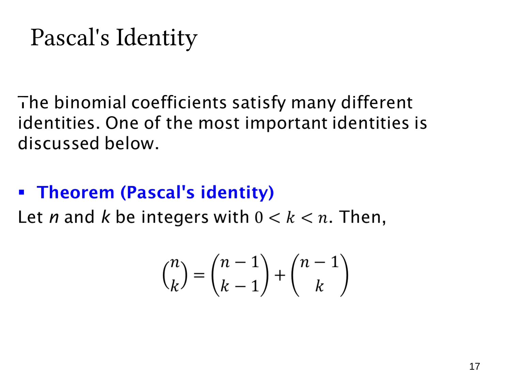

L1.7 · 第 17 页讲解原文
查看这一页课件

帕斯卡恒等式：选或不选一个指定元素
对于整数 0<k<n，Pascal’s identity（帕斯卡恒等式）为
(kn)=(k−1n−1)+(kn−1).
它把一个组合数写成两个规模更小的组合数之和。
考虑从 n 人中选 k 人，先固定其中某个特定的人 A：
- 若选 A，剩下 k−1 人从其他 n−1 人中选，有 C(n−1,k−1) 种。
- 若不选 A，全部 k 人从其他 n−1 人中选，有 C(n−1,k) 种。
这两类互不重叠且覆盖全部 k 人组，因此数量相加。A 是事先指定的人，不需要再乘一个“选 A”的 n 因子。
例如 C(5,2)=C(4,1)+C(4,2)=4+6=10。
恒等式提供递推计算方法：已知上一行组合数，便能相加得到下一行内部项；边界 C(n,0)=C(n,n)=1 另外给出。这也是帕斯卡三角形的基础。